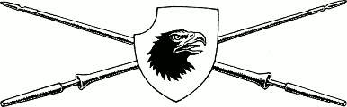

171
You take it in turns to keep watch throughout the night in case a pursuit party is sent from Cavalia to track you down. Fortunately, the night passes peacefully and you leave the wood shortly before dawn. As the sun crests the eastern horizon, you see a signpost at the roadside which says: ‘Varedo—150 miles’.
‘Normally one could expect to reach Varedo in three days by horse,’ says Karvas, ‘but if we use every hour of daylight and rest our mounts briefly, every hour, we may be able to cover the distance in half the time.’ Mindful that you now have only nine days in which to reach Seroa to be in time for the crowning, and wary that a pursuit party could still be sent from Cavalia to hunt you down, you spend this day in the saddle riding as far and as fast as your horses are able. By nightfall, you have made excellent progress and you are confident that the threat from Cavalia is no more. You camp for the night beside a stream and, before you sleep, you use your Magnakai skills to assist the horses to recover fully from their hard day’s ride.
The following day is spent crossing the seemingly endless Lucien Plain, the monotony of the grasslands broken only occasionally by an isolated hamlet or farmstead. You have no need to approach these settlements for the rich prairie yields enough game to keep you well fed while you are on the move. It also provides surplus food equivalent to 2 Meals (adjust your Action Chart accordingly if you wish to keep one or both of these Meals).
During the afternoon, you see a group of riders approaching from the north, from out of the wooded foothills of the Ioma Range. You magnify your vision and your stomach churns when you see that they are carrying spears which display the black eagle’s-head pennant of Baron Sadanzo. You focus your Kai senses upon this distant group of riders and detect that they are not soldiers. They are a hunting party seeking wild deer. The open plain offers no place to hide from these approaching horsemen and the lack of cover makes you feel especially vulnerable. You remain stationary for a few minutes while you watch them draw closer. You are hoping that they are too preoccupied with their hunt to pay you any attention. However, you soon realize that they have lost the trail of their wild deer and have decided to track new quarry—you and Karvas.
{kind=link}

If you wish to stand and face this hunting party, turn to 93.
If you wish to attempt to evade them, turn to 277.